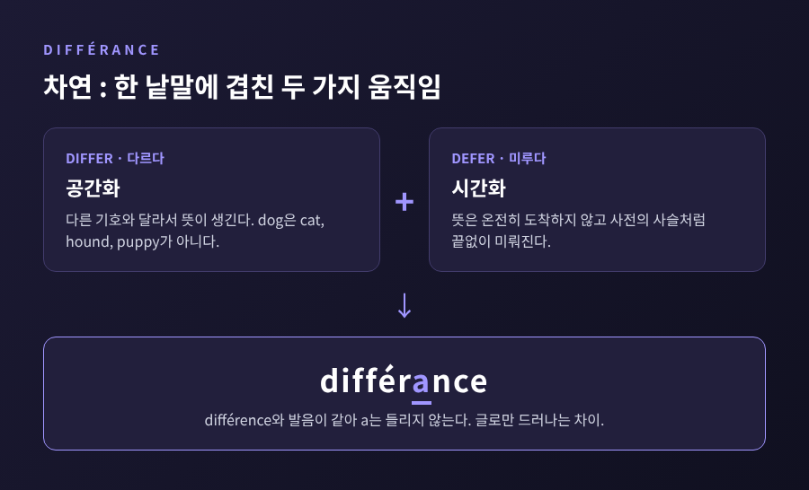
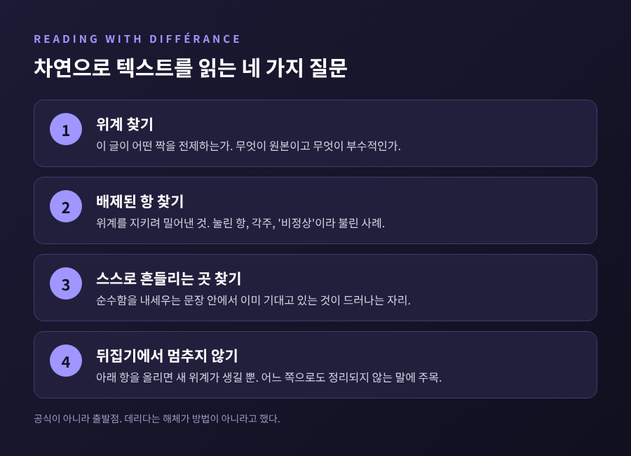

[철학/인문] 해체는 부수는 일이 아니라 다시 꼼꼼히 읽는 일입니다.
차연은 의미가 '다르다'와 '미룬다'를 동시에 품고 있다는 뜻입니다.
오늘은 데리다의 해체와 차연을 텍스트 읽기의 방법으로 풀고, 흔한 오해와 비판까지 함께 살펴보려 합니다.
해체(déconstruction)라는 말은 하이데거의 'Destruktion'에서 왔습니다.
하이데거는 이 말을 물려받은 개념들을 하나씩 검토한다는 뜻으로 썼습니다.
없애 버린다는 뜻이 아니라, 형이상학적 구조가 쥐고 있던 힘을 느슨하게 푼다는 뜻이었습니다.
데리다가 이 개념을 본격적으로 펼친 책이 『그라마톨로지에 관하여』(1967)입니다.
같은 해에 『목소리와 현상』, 이어서 「차연」과 『글쓰기와 차이』에서도 이야기를 이어 갔습니다.
해체가 무엇인지에 대한 데리다의 답은 독특합니다.
무엇인지보다 무엇이 아닌지로 말합니다.
「일본인 친구에게 보내는 편지」(1983)에서 그는 해체가 "방법이 아니며 방법으로 바뀔 수도 없다"고 적었습니다.
규칙이나 옮겨 쓸 수 있는 절차로 줄일 수 없다는 것입니다.
그렇다면 실제로는 무엇을 하는 것일까요.
Stanford 강의 자료에 모인 설명을 종합하면, 순수하고 투명하며 보편적이라고 주장하는 텍스트가 바로 그 주장을 하는 과정에서 스스로 흔들리는 지점을 보여 주는 꼼꼼한 읽기입니다.
폴 드 만은 텍스트의 요소만으로 텍스트의 주장을 풀어내는 능력이라 했고, J. 힐리스 밀러는 텍스트가 이미 스스로를 해체해 놓았음을 보이는 일이라 했습니다.
밖에서 망치를 휘두르는 비평이 아닙니다.
텍스트 안쪽에서 이음매를 찾는 읽기입니다.
서구의 철학은 짝을 지어 생각하는 데 익숙했습니다.
말과 글, 본질과 현상, 현전과 부재, 논리와 수사 같은 짝입니다.
문제는 이 짝이 대등하지 않다는 점입니다.
한쪽은 원본이고 다른 쪽은 그 그림자로 놓입니다.
대표적인 짝이 말과 글입니다.
말은 생각을 곧바로 전하는 듯 보이고, 글은 그 말을 옮겨 적은 이차적 기호로 취급됩니다.
REP(루틀리지 철학 백과)는 이 구도가 '무한히 이어지는 대립들' 가운데 하나일 뿐이라고 설명합니다.
여기서 흔히 하는 오해가 나옵니다.
위계를 뒤집어 글을 말 위에 올리려는 것 아니냐는 생각입니다.
그렇지 않습니다.
말과 글의 구분이 애초에 지탱되지 않음을 보이면, 글이 말보다 안전해지는 것도 아닙니다.
위계 자체를 떠받치는 배제의 논리를 문제 삼는 것입니다.
SEP(스탠퍼드 철학 백과)는 이 과정을 두 국면으로 정리합니다.
첫 단계에서는 본질 대 현상, 음성 대 글 같은 위계를 뒤집습니다.
둘째 단계에서는 아래에 눌려 있던 항을 대립 전체의 '기원'으로 다시 써 넣습니다.
헤겔의 변증법처럼 두 항을 더 높은 종합으로 화해시키지도 않습니다.
이 지점에서 파르마콘, 보충, 차연 같은 '결정불가능한 말'이 등장합니다.
배제는 사라지지 않습니다.
Stanford 자료가 소개하는 Taylor의 표현을 빌리면, 모든 구조는 배제의 행위로 만들어지고 유지됩니다.
억눌린 것은 프로이트의 억압처럼 돌아와 가장 단단해 보이던 구조를 흔듭니다.
해체는 그 되돌아옴을 읽어 내는 작업입니다.
음성중심주의(phonocentrism)는 목소리를 글보다 앞세우는 경향을 가리킵니다.
데리다는 『그라마톨로지』에서 로고스중심주의가 언제나 오래된 음성중심주의 전통을 함께 끌고 온다고 논했습니다.
책의 첫머리에 놓인 문장은 니체의 "글을 쓰지 않았던 자, 소크라테스"입니다.
아리스토텔레스는 음성이 정신의 경험을, 문자는 음성을 상징한다고 보았습니다.
루소는 "글쓰기는 말의 재현일 뿐"이라고 했습니다.
이 문장은 『그라마톨로지』 2장 「언어학과 문자학」의 서두에 인용됩니다.
소쉬르도 글을 언어의 내부 체계 바깥에 두었습니다.
말은 화자가 곁에 있는 생생한 현전이고, 글은 화자가 없어도 돌아다니는 파생물이라는 생각입니다.
데리다의 소쉬르 비판은 꽤 날카롭습니다.
소쉬르는 기호를 정신적이고 자의적인 것으로 보아 형이상학과 거리를 둔 듯하지만, 정작 글은 밀어내고 내면의 목소리를 특권화했다는 지적입니다.
기호와 의미의 연결이 자의적이라면 말이 글보다 자연스럽다는 근거는 사라집니다.
자기 전제가 자기 결론을 허무는 셈입니다.
플라톤의 예도 흥미롭습니다.
플라톤은 글이 오독될 수 있다고 불신했습니다.
데리다는 「플라톤의 약방」에서 그리스어 '파르마콘'이 약이면서 독이라는 점에 주목했습니다.
이 양면성을 글의 결함이 아니라 글의 성격으로 읽습니다.
글은 독자가 어떻게 읽을지 통제하지 못합니다.
데리다는 바로 그 점에서 글의 정직함을 봅니다.
차연(différance)은 데리다가 만든 말입니다.
프랑스어 동사 différer에는 '다르다'와 '미루다'라는 두 뜻이 있습니다.
데리다는 이 두 뜻을 한 낱말에 겹쳐 놓았습니다.
의미는 다른 기호와 달라서 생깁니다.
그리고 그 의미는 어디에서도 온전히 눈앞에 나타나지 않으므로 끝없이 미뤄집니다.

출발점은 소쉬르입니다.
소쉬르는 『일반언어학 강의』(1916)에서 "언어에는 차이만 있다"고 적었습니다.
기호의 값은 그것 자체의 소리나 관념보다 주변 기호와의 관계에서 나옵니다.
데리다는 여기에 동의하면서도 한 걸음 더 갑니다.
구조적 차이를 더는 파고들 수 없는 바닥으로 삼을 수 없고, 그 차이도 해체되어야 한다고 봅니다.
데리다는 차이를 만드는 움직임을 '공간화'(espacement), 미루는 움직임을 '시간화'(temporisation)라 불렀습니다.
쉬운 예가 사전입니다.
단어의 뜻을 찾으면 다른 단어가 나옵니다.
그 단어를 찾으면 또 다른 단어가 나옵니다.
사슬은 끝나지 않고, 옛 사전과 견주면 층이 하나 더 쌓입니다.
'dog'의 의미는 hound, puppy, cat처럼 그 단어가 아닌 것들과의 놀이 속에서 만들어집니다.
literariness.org의 표현을 따르면 차연은 "현전의 효과를 낳는 일종의 부재"입니다.
시간도 끼어듭니다.
과거의 의미들은 기호에 흔적(trace)을 남기고, 앞으로 생길 의미는 기호에 출몰합니다.
르네상스 시기 영국에 오렌지가 수입되자 'orange'가 색 이름이 되었고, 그 바람에 yellow와 red의 의미도 달라졌습니다.
한 단어가 들어오면 이웃 단어의 경계가 다시 그어집니다.
철자에도 장치가 있습니다.
différance는 différence의 일부러 틀린 철자입니다.
프랑스어에서 두 단어는 발음이 같아서 a는 소리가 나지 않습니다.
글로 써야만 드러나는 차이입니다.
데리다는 이를 신조어가 아닌 '신문자'(neographism)라 불렀습니다. 말이 글에 앞선다는 오랜 서열을 슬쩍 흔드는 장치인 셈입니다.
1968년 발표 때의 일화가 있습니다.
어떤 청중이 차연은 모든 것의 근원이면서 알 수 없으니 부정신학의 신 아니냐고 항의했습니다.
데리다는 "그것은 있고, 또 없다"고 답했습니다.
차연은 숨어 있는 초월적 본질이 아니라, 현전이 만들어지는 과정에 붙인 이름이라는 뜻입니다.
해체는 방법이 아니라는 데리다의 말을 존중하면서도, 읽는 사람 입장에서 길잡이를 하나 만들 수는 있습니다.
아래는 앞서 정리한 내용을 읽기의 질문으로 옮긴 것입니다. 공식이 아니라 출발점입니다.

첫째, 이 글이 전제하는 짝과 위계는 무엇입니까.
무엇이 '원본', 무엇이 '부수적인 것'으로 놓여 있는지 확인합니다.
둘째, 그 위계를 유지하려고 무엇을 배제했습니까.
눌린 항, 각주로 밀려난 사례, 비정상이라 불린 경우를 찾아봅니다.
셋째, 텍스트 스스로 그 위계를 흔드는 곳은 어디입니까.
주장이 순수함을 내세우는 문장 안에서 이미 의존하고 있는 것이 드러나는 자리입니다.
넷째, 단순히 뒤집는 데서 멈추지 않았습니까.
아래에 있던 항을 위로 올리면 새 위계가 생길 뿐입니다.
두 항 사이에서 어느 쪽으로도 정리되지 않는 말(차연, 파르마콘, 보충 같은)에 주목하는 쪽이 해체에 가깝습니다.
첫째, 해체는 파괴라는 오해입니다.
Stanford 자료에 따르면 Taylor는 '분해'라는 통념을 오도하는 상투어라 했고, REP는 Destruktion이 소멸을 뜻하지 않는다고 짚습니다.
데리다는 해체가 언어와 글을 거부하는 일이 아니라 자기현전의 주장에 도전하는 일이라고 보았습니다.
둘째, '텍스트 바깥은 없다'는 말이 세상에는 말만 있다는 뜻이라는 오해입니다.
이 문장은 『그라마톨로지』의 루소 독해 안에 나옵니다.
루소는 언어를 현실을 왜곡하는 렌즈로 보았습니다.
데리다는 언어 뒤로 돌아가 날것의 경험에 닿을 수는 없다고 답한 것입니다.
데리다 자신이 훗날 이 말이 "맥락 바깥에는 아무것도 없다"는 뜻일 뿐이라고 밝혔습니다.
그는 "아무 말이나 해도 된다"고 말하거나 부추긴 적이 없다고도 했습니다.
다만 스피박의 'nothing outside the text'라는 번역 자체가 오역이라는 반론도 학계에 있습니다. 이 점은 아직 논쟁이 이어집니다.
셋째, 의미가 고정되지 않으니 상대주의이고 아무 해석이나 가능하다는 오해입니다.
비평가들은 고정된 의미가 없으면 도덕이 불안해지고 소통이 횡설수설이 되리라 우려했습니다.
데리다는 맥락이 해석 공동체에 의해 정해지고, 좋은 해석의 규칙도 거기서 세워진다는 입장이었습니다.
위키백과의 Deconstruction 항목도 데리다가 허무주의나 냉소에 머무는 것을 경계했다고 정리합니다.
해체가 널리 받아들여진 것은 아닙니다. 대표적인 두 논쟁을 병기합니다.
첫 번째는 존 설과의 논쟁입니다.
데리다는 1971년 몬트리올 학회에서 「서명 사건 맥락」을 발표했고 이 글은 1972년 『철학의 여백』에 실렸습니다.
오스틴의 화행론을 해체적으로 읽은 글입니다.
오스틴은 말이 '하는 일', 곧 힘(force)에 주목해 언어철학의 방향을 틀었지만, 허구나 농담 같은 '기생적' 발화는 분석에서 제외했습니다.
데리다는 '반복가능성'을 내세웁니다.
언어 요소는 원래 맥락 밖에서 되풀이될 수 있고, 모든 반복은 어느 정도 인용입니다.
그러므로 접근할 수 없는 화자의 의도를 최종 권위로 삼을 수 없고, 위반을 주변부 사고로 치부해서도 안 된다는 것입니다.
설은 1977년 「차이를 되풀이하며」로 답했습니다.
그의 논지는 이렇습니다.
오스틴의 목표는 훨씬 좁았는데 데리다가 전면적 언어이론으로 오해했다는 것, 유형과 개별 사례의 구분과 오스틴의 '실패' 개념도 오해했다는 것입니다.
설도 의도가 반복가능성을 전제한다는 데는 동의했습니다.
다만 같은 문장이 다른 의미로 쓰일 수 있다는 사실이 원래 발화의 의미에 대해 중요한 점을 말해 주지는 않는다고 보았습니다.
데리다는 약 90쪽에 이르는 「Limited Inc a b c…」로 응수했습니다.
설이 자신을 덜 꼼꼼히 읽었다고 했고, 오스틴에 더 가까운 쪽은 자신이라고 했습니다.
설이 푸코의 사적 발언을 끌어다 쓴 것은 확인 불가능한 가십이자 권위에 대한 호소라고 비판했습니다.
1988년 『Limited Inc』가 묶여 나올 때 설은 자신의 답변을 다시 싣는 것을 거절했습니다.
설은 이후 데리다의 논증이 허술하다는 비판을 이어 갔고, 1995년에는 그 결론을 '터무니없다'고 했습니다.
평가는 갈립니다.
분석철학과 대륙철학의 충돌로 보는 시각, 정교한 오해의 연속으로 보는 시각, 어느 한쪽이 우세했다고 보는 시각이 공존합니다.
두 번째는 하버마스입니다.
『근대의 철학적 담론』(독일어 1985, 영역 1987)에서 하버마스는 데리다가 철학과 문학의 장르 구분을 평준화한다고 비판했습니다.
어떤 연구는 하버마스가 데리다에게서 흐려졌다고 본 구분을 철학과 문학, 수사와 논리, 정상과 비정상 언어 사용, 언어의 세계개시 기능과 문제해결 기능, 이렇게 넷으로 정리합니다.
하버마스의 우려는 진리·도덕·미라는 서로 다른 가치 영역이 무너지고, 두 활동이 서로를 잘못 동화시켜 실체를 잃으리라는 것입니다.
그는 데리다가 원-문자에 기대는 기원철학의 방식에 머문다고도 했고, 해체가 자신이 공격하는 담론의 구조에 기댄다는 자기반박의 혐의도 제기했습니다.
반론도 있습니다.
Sandler는 데리다가 허구와 논증의 경계에 도전하면서도 그가 섞는 장르 안에서 작업한다고 봅니다.
오히려 모든 장르가 논증적 합리성에 답해야 한다고 고집하는 하버마스가 장르의 구분을 지운다는 역설입니다.
Mallia는 하버마스의 논거가 데리다 원전보다 미국 추종자들의 글에서 왔을 가능성을 지적합니다.
데리다 쪽의 응답도 있습니다.
위계는 이항대립에 의존하므로 단순한 역전이 아니고, 하버마스가 이를 수사의 격상으로만 읽는 것은 논리가 수사 위에 있다는 위계를 이미 전제하기 때문이라는 것입니다.
다만 이 응답은 Garmer 논문이 재구성한 것이어서, 데리다 본인의 직접 반박 전문은 확인하지 못했습니다.
두 사람이 서로를 다르게 기술한다는 점이 인상적입니다.
하버마스는 수사를 논리 위에 올리려 한다고 보고, 데리다는 그 구분 자체를 없애려 한다고 말합니다.
그 밖의 비판도 있습니다.
Richter는 해체 비평이 창의적이지만 대체로 아포리아로 끝나며, 텍스트마다 같은 어지러움이 되풀이된다고 지적합니다.
SEP는 해체가 비논리적이고 부정확하다는 인상이 부분적으로 데리다의 문학적 문체에서 비롯됐다고 설명합니다.
해체라는 말이 패션 기사에까지 쓰이며 느슨해졌다는 지적도 있습니다.
데리다 자신이 해체는 '작업이 필요한 일'이라 쉽게 정의할 수 없다고 말했습니다.
정리하면 이렇습니다.
해체는 부수는 기술이 아니라, 텍스트가 세운 위계와 그 배제를 끈기 있게 읽는 일입니다.
차연은 그 읽기의 바탕에 놓인 생각입니다.
의미는 다른 것과의 차이에서 생기고, 어디에서도 온전히 도착하지 않습니다.
그렇다고 모든 해석이 똑같다는 결론이 따라오는 것은 아닙니다.
데리다 스스로 맥락과 해석 공동체의 규칙을 말했고, 설과 하버마스는 그 말이 충분한지를 끝까지 따져 물었습니다.
어느 쪽이 옳은지는 읽는 분이 직접 판단하실 몫입니다.
"의미는 도착하지 않고, 읽는 사람은 계속 읽습니다."
다음에 어떤 글을 읽다가 너무 당연하게 놓인 위계를 만나신다면, 잠시 멈춰 그 아래에 눌려 있는 것이 무엇인지 물어보시길 권합니다.